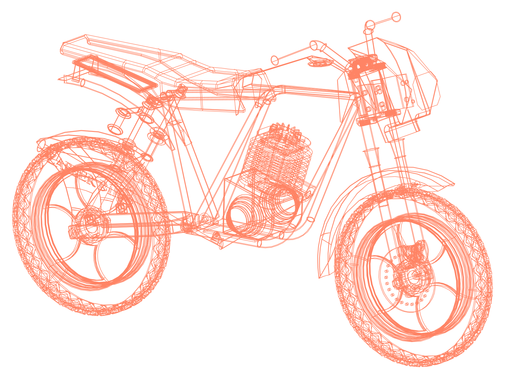
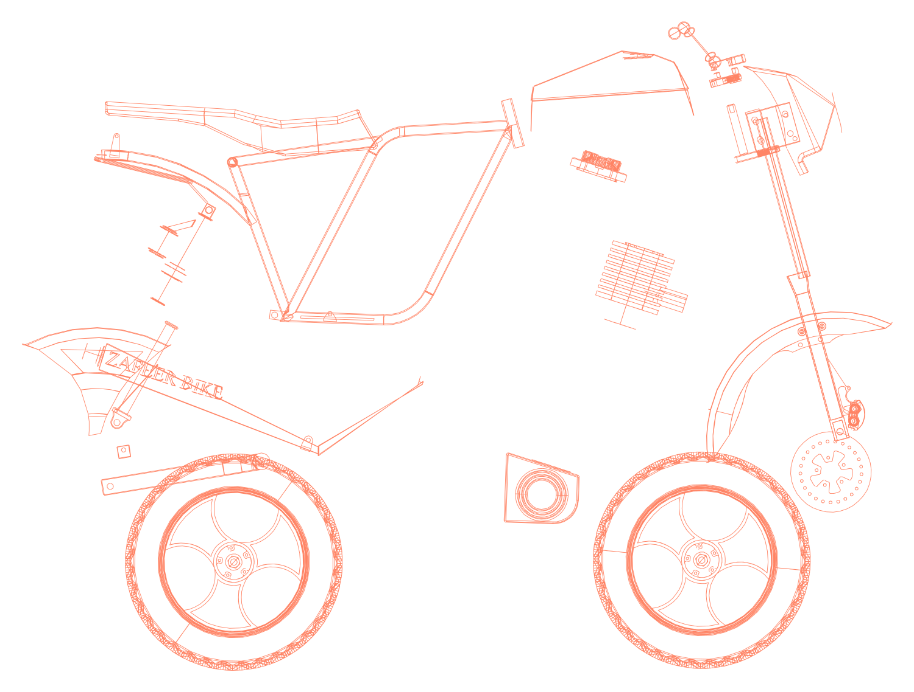

01 / MECHANICAL DESIGN
Motorcycle Assembly
Thirty components. One complete assembly. Recreated in SolidWorks using externally sourced drawings and design references.
- Role
- CAD modeling and assembly from existing references
- Context
- Reference-based CAD study, 2026
- Tools
- SOLIDWORKS: weldments, surfacing, large-assembly modeling, drawing interpretation
- Scope
- 30 unique parts, 3 subassemblies, 1 top-level assembly
- Output
- CAD component models, three subassemblies and a top-level assembly
- Skills
- SOLIDWORKS
- Weldments
- Surface modeling
- Large-assembly modeling
- Drawing interpretation
- GD&T
A complete motorcycle modeled part by part over three weeks: 30 unique components, three subassemblies and one top-level assembly. The build exercised the parts of SolidWorks that production work actually depends on: weldment structural members for the frame, surfacing for the fuel tank as a 2 mm thin-wall body, and cast-part detailing on the crankcase cover: a 74° draft, four Ø15 holes on a 102 mm square pattern, and stepped bores at Ø90, Ø102, Ø127 and Ø152.
The original motorcycle designs and all dimensioned drawings shown here were externally sourced. I used them as references to recreate the components and assembly in SolidWorks. I have not produced my own drawing set for this project.



